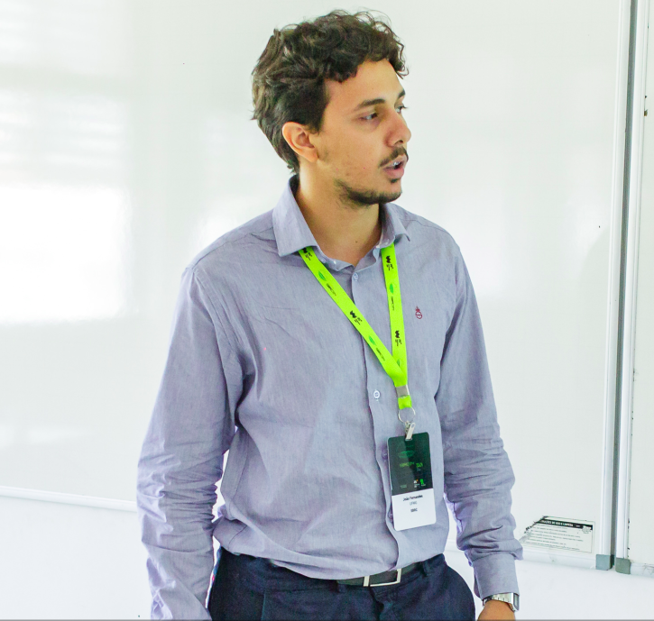

Passionate about challenges and solving problems using math and software.
I have been doing research with professor Dr. Guilherme Maia at the
Wisemap Lab for the past three years. My main research topics involve deep learning, urban computing,
algorithms, and others. I currently work on research in traffic signal control using deep reinforcement learning.
I'm a curious person always eager to learn something new!
On the Projects page, some interesting personal projects are listed and academic publications are on the Academic tab.